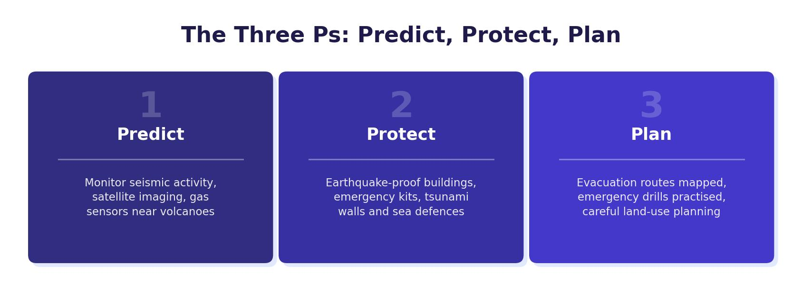

How Wealth Affects Tectonic Hazards
Tectonic hazards strike both wealthy and poor countries — the plates do not recognise national borders. However, the effects of a tectonic event and the response to it differ enormously depending on a country’s wealth. To understand this, we compare two real earthquake case studies: the Haiti earthquake (2010) in a low-income country (LIC), and the Christchurch earthquake (2011) in a high-income country (HIC).
Effects are split into primary effects (direct results of the earthquake, such as deaths and building collapse) and secondary effects (indirect consequences that follow, such as disease and job losses). Responses are split into immediate responses (emergency actions in the first hours and days) and long-term responses (rebuilding and recovery over months and years).

Case Study: Haiti Earthquake, 2010 (LIC)
On 12 January 2010, a magnitude 7.0 earthquake struck near the capital city of Port-au-Prince, Haiti. Haiti is located on the boundary between the Caribbean Plate and the North American Plate. At the time, Haiti was the poorest country in the Western Hemisphere, with a GNI per capita of just $810 and a GDP of $11.5 billion. It ranked 126th in the world by wealth.
Primary Effects
- 230,000 people killed, 300,000 injured and 1.3 million left homeless.
- 180,000 buildings destroyed and a further 200,000 damaged.
- Most of the city’s poorly built infrastructure was damaged or destroyed.
- Main transport hubs (airports and ports) were badly damaged, making it difficult to bring in aid.
Secondary Effects
- 2 million people left without food and water. Cholera spread rapidly, and power cuts were widespread.
- 70% of the population was left without work, devastating the economy.
- The country became entirely reliant on international aid. Crime increased as desperation grew.
Immediate Responses
The immediate response was slow and poorly organised. Haiti’s government was unable to coordinate relief because its own buildings and infrastructure had been destroyed. Aid from other countries was slow to arrive, largely because the airports and ports were damaged. Even when aid did arrive, it could not be distributed easily because roads were blocked by rubble and agencies did not know where to send supplies.
Eventually, the USA stepped in and took over the relief effort, sending 10,000 military troops with helicopters and specialist equipment. Satellite images were used to direct aid to people in need. Bottled water and purification tablets were distributed. 235,000 people were moved out of Port-au-Prince. Dead bodies were buried in mass graves to prevent the spread of disease.
Long-term Responses
The long-term recovery was also slow and poorly organised. The UK donated over £20 million, the EU gave $330 million, and the World Bank cancelled Haiti’s debt repayments for five years. However, because of a lack of leadership within Haiti, only 2% of the $1.1 billion raised by 23 international aid agencies was actually released to the country.
One year after the earthquake, 1 million people were still homeless and without running water or sanitation. 98% of roads were still blocked by rubble. 70% of people had not returned to work. Haiti has still not fully recovered.
Case Study: Christchurch Earthquake, 2011 (HIC)
On 22 February 2011, a magnitude 6.3 earthquake struck the city of Christchurch, New Zealand. New Zealand sits on the boundary between the Pacific Plate and the Australian Plate. It is a wealthy HIC with a GNI per capita of $40,020 and a GDP of $171.71 billion, ranked 52nd in the world.
Primary Effects
- 185 people killed and 7,100 injured — far fewer than Haiti despite significant damage.
- 100,000 buildings damaged across the city.
- 80% of water and sewage pipes damaged.
- Widespread damage to the city’s power supply and road network, costing an estimated $40 billion.
Secondary Effects
- Some homes were flooded, while others were destroyed by fires caused by broken gas pipes.
- Some people had limited access to food and water in the immediate aftermath.
- Businesses were closed for a long period, leading to job losses and reduced incomes.
Immediate Responses
The immediate response was rapid and well organised. $7 million of international aid arrived within the first three weeks, along with aid workers from charities including the Red Cross. Rescue workers from across New Zealand were supported by urban search and rescue teams from the UK, Taiwan and Australia. 300 Australian police officers flew in to support local police, helping to maintain order and reassure residents. 30,000 people were provided with portable toilets to reduce the risk of disease.
Long-term Responses
The long-term recovery was effective and well organised. The Canterbury Earthquake Recovery Authority was established with special powers to change planning laws and coordinate rebuilding across the city. Insurance companies paid out $898 million to help repair damaged buildings. 10,000 new affordable homes were built, and 80% of roads, water and sewage pipes were repaired within just six months.
New Zealand: GNI per capita = $40,020 | GDP = $171.71 billion | Ranked 52nd richest country. Haiti: GNI per capita = $810 | GDP = $11.5 billion | Ranked 126th richest country. New Zealand’s individual citizens earn nearly 50 times more on average than Haitians. This massive difference in wealth translates directly into better infrastructure, stronger buildings, better-trained emergency services, and faster recovery times.
Comparing the Two Earthquakes
The contrast between Haiti and Christchurch is striking and demonstrates clearly how wealth affects the impact of a tectonic hazard.
Effects
The primary effects were far worse in Haiti. Despite the Christchurch earthquake being smaller in magnitude (6.3 vs 7.0), the death toll in Haiti was over 1,200 times greater (230,000 vs 185). This is because New Zealand had invested heavily in the Three Ps (prediction, protection and planning). Buildings were constructed to withstand earthquakes, emergency services were well-trained, and the population knew what to do. In Haiti, buildings were poorly constructed with little or no earthquake-resistant design, so they collapsed on a massive scale.
The secondary effects were also far more severe in Haiti. In Christchurch, only “some” people were affected, whereas in Haiti 2 million people were left without food and water and 70% of the population lost their jobs. Haiti’s lack of development meant its infrastructure was poor before the earthquake even struck, leaving it much more vulnerable.
Responses
New Zealand’s wealth allowed it to mobilise help quickly, both domestically and from overseas. Emergency services reached people rapidly, infrastructure was repaired within months, and insurance covered much of the rebuilding cost. Haiti, by contrast, could not help itself — its government buildings were destroyed, its emergency services were overwhelmed, and it had no money for rebuilding. The USA eventually had to take over the relief effort. Even years later, Haiti had not recovered.
Being a wealthy country does not prevent earthquakes from happening, but it does enable a country to invest in the Three Ps — better prediction, stronger protection and more effective planning — which significantly reduces the number of deaths, speeds up the response and shortens recovery time.